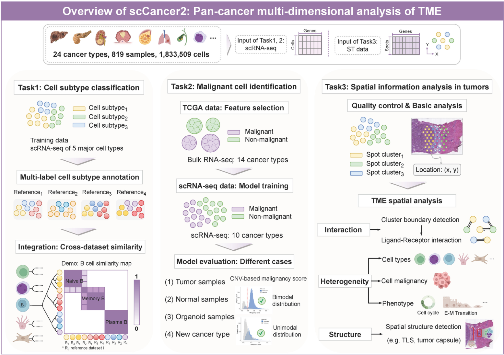

本篇主要记录基于10X cellranger之后的数据进行简单的初步处理。以及简单的报告，该部分内容基于 scCancer2
- 如何安装scCancer2
- 如何使用scCancer2进行分析
工具介绍
以下来自于 scCancer2的github介绍

We updated our R toolkit, scCancer, based on massive single-cell transcriptome and spatial transcriptome data.
-
Cell subtype annotationandcross-dataset label similarity: Our analysis mainly focused on cell subtype annotation by training multiple lightweight machine-learning models on scRNA-seq data. We proposed a method for quantitatively evaluating the similarity of cell subtype labels originating from different published datasets. We fully preserved the original labeling in cell atlases and analyzed the relationship between cell subtypes across datasets. -
Malignant cell identification: We constructed a reference dataset combining scRNA-seq and bulk RNA-seq data across multiple cancer types to identify the malignant cell in TME. We trained a model to identify malignant cells with high generalization ability and computational efficiency. -
Spatial transcriptome analysis: Finally, we integrated a spatial transcriptome analysis pipeline. It enables us to analyze TME from a spatial perspective systematically and automatically.
With scCancer2, researchers can understand the composition of the TME more accurately from multiple dimensions.

工具安装
目前该工具依赖于 Seurat-4.3.0。其余的按照github页面的安装指引即可。(还是挺折腾的，建议单独开一个虚拟环境安装QAQ) harmony的版本不能低了
micromamba install conda-forge::r-harmony
值得注意的是在该工具存在一个bug(在 R 4.3.2 中)。引起错误的原因出现在 scStatistics.R的第257行。
tmp.df <- cell.manifest[order(cell.manifest["nUMI"], decreasing = TRUE),]
应该修改为
tmp.df <- cell.manifest[order(cell.manifest[,"nUMI"], decreasing = TRUE),]
## 或
tmp.df <- cell.manifest[order(cell.manifest$nUMI, decreasing = TRUE),]
需要解压源码包修改其中的 R/scStatistics.R 中的代码重新安装。也可以用我的github下面fork的版本。
devtools::install_github("https://github.com/gganakin/scCancer2")
使用方法
具体可以参考旧版本的使用说明，使用方法没有变化。 加载安装好的R包
library(scCancer)
1. 单样本分析
ScStatistics
dataPath <- "/path/to/cellranger/run_sample/outs/" # 需要指定到cellranger结果文件中的 outs/ 文件夹
savePath <- "/path/to/results/Sample/ScStat" # 存放本次分析结果路径，由于该工具分为 statistic 和 annotation 两个步骤，所以可以指定不同的路径
sampleName <- "Sample" # 样本名称
authorName <- "author" # 出现在报告文件中的名字
species <- "human" # 指定物种，目前只有人(human) 和小鼠(mouse)
# Run scStatistics
stat.results <- runScStatistics(
dataPath = dataPath,
savePath = savePath,
sampleName = sampleName,
authorName = authorName,
species = species
)
会在 你指定的 savePath 也就是 /path/to/results/Sample/ScStat 下生成这些文件。 文件夹下的report-scStat.html 就是总览文件
├── cellManifest-all.txt
├── cell.QC.thres.txt
├── figures
├── geneManifest.txt
├── report-cellRanger.html
├── report-figures
├── report-scStat.html
├── report-scStat.md
└── scStatistics-results.RDS
- cellManifest-all.txt : The statistical results for all droplets.
- cell.QC.thres.txt : The suggested thresholds to filter poor-quality cells.
- figures/ : All figures generated during this module.
- geneManifest.txt : The statistical results for genes.
- report-cellRanger.html : The summary report generated by Cell Ranger.
- report-figures/ : All figures presented in the HTML report.
- report-scStat.html : A HTML report containing all results.
- report-scStat.md : A markdown report.
- scStatistics-results.RDS : A RDS file containing all results.
ScAnnotation
dataPath <- "/path/to/cellranger/run_sample/outs/" ## cellranger 输出路径
savePath <- "/path/to/results/Sample/ScAnno" ## 结果存放路径
sampleName <- "Sample" ## 样本名称
authorName <- "author" ## 分析者
species <- "human" ## 物种
statPath <- "/path/to/results/Sample/ScStat" ## scStatistics 输出路径
geneSet.method <- "average" ## 细胞类型定义方法 average or GSVA
# Run scAnnotation
anno.results <- runScAnnotation(
dataPath = dataPath,
statPath = statPath,
savePath = savePath,
authorName = authorName,
sampleName = sampleName,
geneSet.method = "average" # or "GSVA"
)
会在 你指定的 savePath 也就是 /path/to/results/Sample/ScAnno 下生成这些文件。
├── cellAnnotation.txt
├── cellSubtypeAnno
├── DE-Genes.RDS
├── diff.expr.genes
├── expr.programs
├── expr.RDS
├── figures
├── geneManifest.txt
├── InteractionScore.txt
├── malignancy-inferCNV
├── report-figures
├── report-scAnno.html
├── report-scAnno.md
├── rough-cell-annotation.RDS
└── rough-labels.RDS
- cellAnnotation.txt : The annotation results for each cells.
- cellSubtypeAnno : The annotation results for each cells.
- DE-Genes.RDS : Differentially expressed genes information for all clusters.
- diff.expr.genes/ : Differentially expressed genes information for all clusters.
- expr.programs/ : All results of expression programs identification.
- expr.RDS : A Seurat object.
- malignancy-inferCNV : The results of malignancy estimation.
- report-figures/ : All figures presented in the HTML report.
- report-scAnno.html : A HTML report containing all results.
- report-scAnno.md : A markdown report.
- rough-cell-annotation.RDS : A RDS file containing cell type.
- rough-labels.RDS : A RDS file containing cell label.
一般也就用这里的expr.RDS文件。以及查看html报告
2. 多样本分析
ScCombination
single.savePaths <- c("/path/to/results/Sample1/ScAnno",
"/path/to/results/Sample2/ScAnno",
"/path/to/results/Sample3/ScAnno",
"/path/to/results/Sample4/ScAnno",
"/path/to/results/Sample5/ScAnno",
"/path/to/results/Sample6/ScAnno")
sampleNames <- c("Sample1", "Sample2", "Sample3", "Sample4", "Sample5", "Sample6") ## 一定要和single.savePath一一对应
savePath <- "/path/to/results/Combination"
authorName <- "author"
combName <- "Combination"
combine.method <- "Harmony"
# Run scCombination
comb.results <- runScCombination(
single.savePaths = single.savePaths,
sampleNames = sampleNames,
savePath = savePath,
combName = combName,
authorName = authorName,
comb.method = comb.method
)
会在 savePath 也就是 /path/to/results/Combination 下生成这些文件。
├── cellAnnotation.txt
├── DE-Genes.RDS
├── diff.expr.genes
├── expr.programs
├── expr.RDS
├── figures
├── report-figures
├── report-scAnnoComb.html
└── report-scAnnoComb.md
- report-scAnnoComb.html : A HTML report containing all results.
- report-scAnnoComb.md : A markdown report.
- figures/ : All figures generated during this step.
- report-figures/ : All figures presented in the HTML report.
- expr.RDS : A Seurat object.
- diff.expr.genes/ : Differentially expressed genes information for all clusters.
- cellAnnotation.txt : The annotation results for each cells.
- expr.programs/ : All results of expression programs identification.
- (anchors.RDS : The anchors used for batch correction of “NormalMNN” or “SeuratMNN”.)